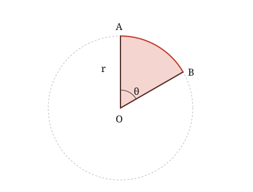

<script>if(location.hostname.endsWith('onrender.com'))location.replace('https://math-sandbox.pages.dev'+location.pathname+location.search+location.hash)</script>
<section class="theory" data-section="P1-4.2">
<h2>4.2 Length of an arc</h2>
<p class="src">Based on Cambridge International AS &amp; A Level Mathematics: Pure Mathematics 1 Coursebook (Sue Pemberton), Chapter 4 Circular measure, pp.104–106 (Key point 4.5, Worked examples 4.2–4.4, Exercise 4B). Own wording and new numbers. Angles in this section are in radians unless a degree sign is shown.</p>
<p class="key-words"><strong>Key words:</strong> <em>arc length</em>, <em>minor arc</em>, <em>major arc</em>, <em>sector</em>, <em>perimeter</em></p>
<h3>The formula</h3>
<p>By the definition of a radian, an arc that subtends an angle of \(1\) radian at the centre of a circle of radius \(r\) has length \(r\). So an arc that subtends an angle of \(\theta\) radians at the centre has length \(r\theta\).</p>
<p><strong>Key point 4.5:</strong></p>
$$\text{arc length}=r\theta$$
<p>Here \(\theta\) <strong>must</strong> be in radians. The same formula gives a minor arc when \(0\lt\theta\lt\pi\) and a major arc when \(\pi\lt\theta\lt 2\pi\). The major arc corresponding to a minor angle \(\theta\) has length \(r(2\pi-\theta)\).</p>
<div class="ms-widget" data-widget="arc-sector" data-mode="arc">
<figure class="ms-widget-fallback"><figcaption>Arc \(AB\) subtends \(\theta\) radians at the centre, so its length is \(r\theta\).</figcaption></figure>
</div>
<div class="worked-example">
<h4>Worked example 1: Arc length in terms of \(\pi\)</h4>
<p class="src">Book: Worked example 4.2, p.104.</p>
<p>An arc subtends an angle of \(\dfrac{\pi}{3}\) radians at the centre of a circle with radius \(15\,\mathrm{cm}\). Find the length of the arc in terms of \(\pi\).</p>
<ol class="steps">
<li>Arc length \(=r\theta=15\times\dfrac{\pi}{3}\) <span class="mark">M1</span></li>
<li>\(=5\pi\,\mathrm{cm}\) <span class="mark">A1</span></li>
</ol>
<p class="final"><strong>Answer:</strong> \(5\pi\,\mathrm{cm}\)</p>
<p class="note">Exact answers in terms of \(\pi\) are left in that form; they are marked on paper (self-mark), because the practice checker has no exact-\(\pi\) acceptance mode.</p>
</div>
<div class="worked-example">
<h4>Worked example 2: Finding the radius</h4>
<p class="src">Book: Worked example 4.3, p.105.</p>
<p>A sector has an angle of \(1.5\) radians and an arc length of \(12\,\mathrm{cm}\). Find the radius of the sector.</p>
<ol class="steps">
<li>Arc length \(=r\theta\), so \(12=r\times 1.5\) <span class="mark">M1</span></li>
<li>\(r=\dfrac{12}{1.5}=8\,\mathrm{cm}\) <span class="mark">A1</span></li>
</ol>
<p class="final"><strong>Answer:</strong> \(8\,\mathrm{cm}\)</p>
</div>
<div class="worked-example">
<h4>Worked example 3: A numerical arc length</h4>
<p class="src">Book: Exercise 4B style, pp.105–106.</p>
<p>Find the length of an arc of radius \(7\,\mathrm{cm}\) that subtends an angle of \(1.2\) radians at the centre, correct to \(3\) significant figures.</p>
<ol class="steps">
<li>Arc length \(=r\theta=7\times 1.2=8.4\) <span class="mark">M1</span></li>
<li>\(8.40\,\mathrm{cm}\) to \(3\) significant figures (the trailing zero is significant) <span class="mark">A1</span></li>
</ol>
<p class="final"><strong>Answer:</strong> \(8.40\,\mathrm{cm}\) (3 s.f.)</p>
</div>
<div class="worked-example">
<h4>Worked example 4: Perimeter of a sector</h4>
<p class="src">Book: Exercise 4B Q5 style, p.106.</p>
<p>A sector has radius \(5\,\mathrm{cm}\) and angle \(1.2\) radians. Find the perimeter of the sector, correct to \(3\) significant figures.</p>
<ol class="steps">
<li>Perimeter \(=2r+r\theta=2\times 5+5\times 1.2=10+6=16\) <span class="mark">M1</span></li>
<li>\(=16.0\,\mathrm{cm}\) (3 s.f.) <span class="mark">A1</span></li>
</ol>
<p class="final"><strong>Answer:</strong> \(16.0\,\mathrm{cm}\) (3 s.f.)</p>
</div>
<h3>Common mistakes</h3>
<ul>
<li>Using \(\theta\) in degrees inside \(r\theta\). Convert to radians first, or (equivalently) use \(\dfrac{\theta^\circ}{360}\times 2\pi r\).</li>
<li>Finding only the arc, when the question asks for the <strong>perimeter</strong> of a sector (\(2r+r\theta\)) or of a segment (arc plus chord).</li>
<li>Using the minor-arc formula when the remaining major arc is required, as in a plate made by removing a segment: that perimeter is \(\text{chord}+r(2\pi-\theta)\).</li>
</ul>
<h3>Quick checks</h3>
<div class="quick-check">
<h4>Quick check 1</h4>
<p>An arc subtends an angle of \(\dfrac{\pi}{3}\) radians at the centre of a circle of radius \(15\,\mathrm{cm}\). Find the arc length in terms of \(\pi\). Work on paper, then reveal the solution and self-mark M1 for using \(r\theta\) and A1 for the simplified exact answer; no typed numeric answer is used.</p>
<details><summary>Worked solution</summary>
<ol class="steps">
<li>\(15\times\dfrac{\pi}{3}=5\pi\,\mathrm{cm}\) <span class="mark">M1 A1</span></li>
</ol>
<p class="final"><strong>Answer:</strong> \(5\pi\,\mathrm{cm}\)</p>
</details>
</div>
<div class="quick-check">
<h4>Quick check 2</h4>
<p>A sector has an angle of \(1.5\) radians and an arc length of \(12\,\mathrm{cm}\). Find the radius.</p>
<details><summary>Worked solution</summary>
<ol class="steps">
<li>\(12=r\times 1.5\Rightarrow r=8\,\mathrm{cm}\) <span class="mark">M1 A1</span></li>
</ol>
<p class="final"><strong>Answer:</strong> \(8\,\mathrm{cm}\)</p>
</details>
</div>
<div class="quick-check">
<h4>Quick check 3</h4>
<p>Find the length of an arc of radius \(8\,\mathrm{cm}\) and angle \(2.4\) radians, correct to \(3\) significant figures.</p>
<details><summary>Worked solution</summary>
<ol class="steps">
<li>\(8\times 2.4=19.2\,\mathrm{cm}\) (already 3 s.f.) <span class="mark">M1 A1</span></li>
</ol>
<p class="final"><strong>Answer:</strong> \(19.2\,\mathrm{cm}\)</p>
</details>
</div>
<p class="marks-key"><strong>Marks:</strong> M = method, A = accurate answer (depends on M), B = independent mark. Give exact answers in terms of \(\pi\) when asked (self-mark). Otherwise give numerical lengths to 3 s.f., keeping full calculator values until the last step.</p>
</section>
